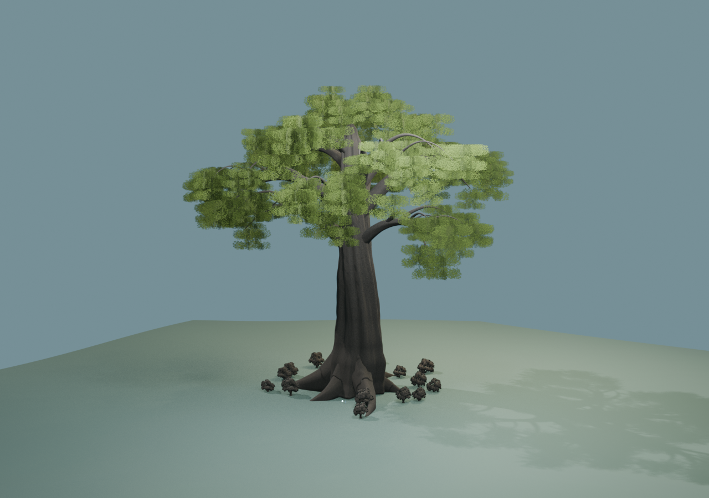
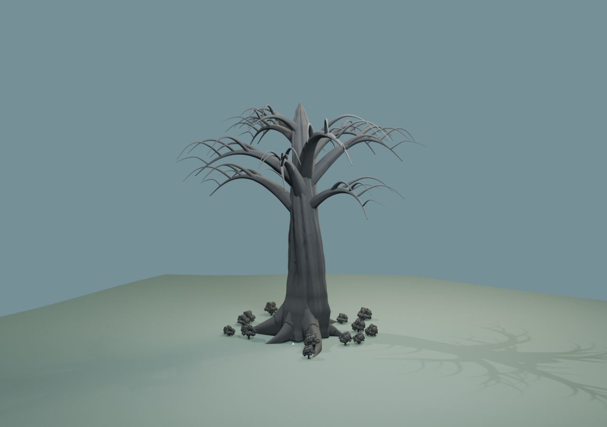

Lumen Swarm / 世界樹の造形比較
20m級の旧モデルを引き伸ばすのではなく、幹と樹冠を新規造形した初稿。樹冠最高約258m、広がり約260m、地際の幹直径50m。生体を先に作り、同じ骨格から枯死状態を派生しています。


これはBlender造形初稿であり、本番採用・Unity実装済みではありません。枝先と根の接合、枯死体の木材破断、樹冠密度をさらに改善する必要があります。周囲の比較用樹木は無料TriForge素材です。
20m級の旧モデルを引き伸ばすのではなく、幹と樹冠を新規造形した初稿。樹冠最高約258m、広がり約260m、地際の幹直径50m。生体を先に作り、同じ骨格から枯死状態を派生しています。


これはBlender造形初稿であり、本番採用・Unity実装済みではありません。枝先と根の接合、枯死体の木材破断、樹冠密度をさらに改善する必要があります。周囲の比較用樹木は無料TriForge素材です。